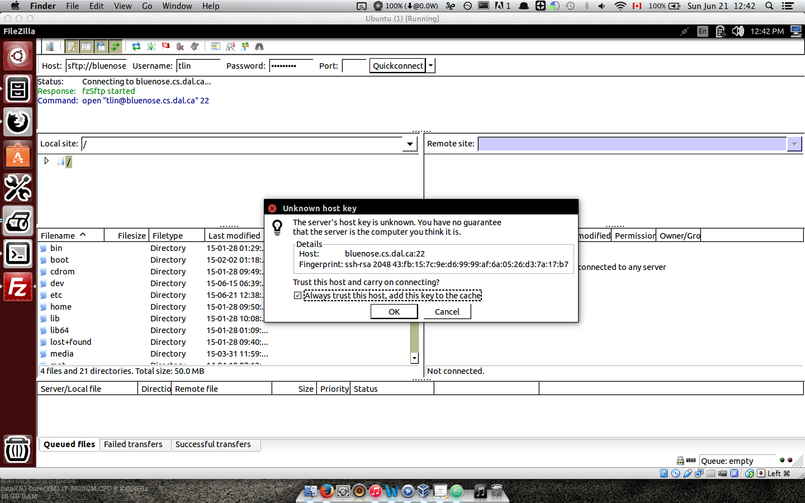
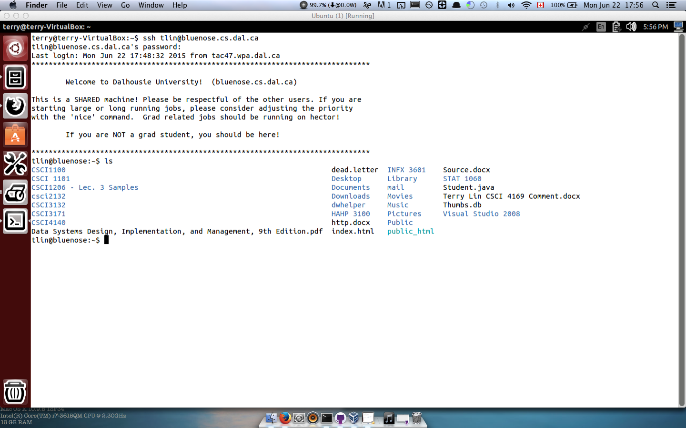

Use of FileZilla
Steps
Open the terminal
Type the following command: sudo apt-get install filezilla

Enter your password
Enter "Y" when it asks you if you want to continue installing it
It will fetch the filezilla files and unpack them for you

After installation, you can now launch FileZilla by typing filezilla in terminal
The host name will be bluenose.cs.dal.ca
- Username would be your CSID
- Password would be CS password
- Port would be 22
If this is your first time connecting the bluenose via FileZilla, a "Unknown host key" wanring window will pop up. Check the box and click OK to proceed

If you want to access your files via URL (html files), make sure to put them in the public_html directory and access them via web.cs.dal.ca/~yourCSID/filename or folder
You can now tranfer the file using FileZilla!

Use of SSH
Steps
Type the following comman: ssh yourCSID@bluenose.cs.dal.ca
It will ask for your password, which would be your CS password
After you are in, you can type the following command (ls) to see the files/folders in your directory
